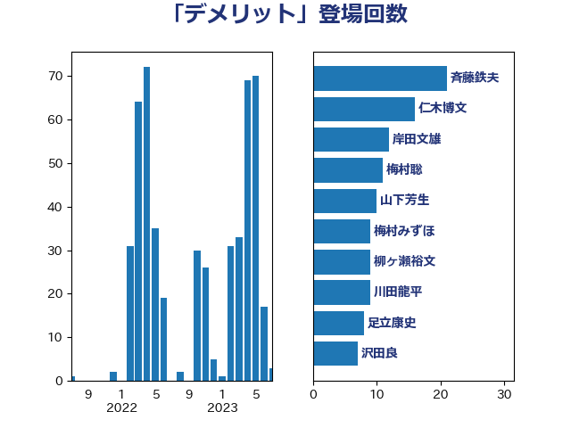

単語「デメリット」

| 斉藤鉄夫 | 公明党 | 21 回 |
| 仁木博文 | 無所属 | 16 回 |
| 岸田文雄 | 自由民主党 | 12 回 |
| 梅村聡 | 日本維新の会 | 11 回 |
| 山下芳生 | 日本共産党 | 10 回 |
| 梅村みずほ | 日本維新の会 | 9 回 |
| 柳ヶ瀬裕文 | 日本維新の会 | 9 回 |
| 川田龍平 | 立憲民主党 | 9 回 |
| 足立康史 | 日本維新の会 | 8 回 |
| 沢田良 | 日本維新の会 | 7 回 |
| 松本剛明 | 自由民主党 | 7 回 |
| 音喜多駿 | 日本維新の会 | 6 回 |
| 鈴木俊一 | 自由民主党 | 6 回 |
| 浜田聡 | NHK党 | 6 回 |
| 松原仁 | 立憲民主党 | 6 回 |
| 伊佐進一 | 公明党 | 6 回 |
| 河野太郎 | 自由民主党 | 5 回 |
| 塩田博昭 | 公明党 | 5 回 |
| 加藤勝信 | 自由民主党 | 5 回 |
| 井坂信彦 | 立憲民主党 | 5 回 |
| 一谷勇一郎 | 日本維新の会 | 5 回 |
| 藤田文武 | 日本維新の会 | 4 回 |
| 横沢高徳 | 立憲民主党 | 4 回 |
| 末松義規 | 立憲民主党 | 4 回 |
| 岸真紀子 | 立憲民主党 | 4 回 |
| 山井和則 | 立憲民主党 | 4 回 |
| 宮口治子 | 立憲民主党 | 4 回 |
| 古川禎久 | 自由民主党 | 4 回 |
| 古川元久 | 国民民主党 | 4 回 |
| 前原誠司 | 国民民主党 | 4 回 |
| 高橋千鶴子 | 日本共産党 | 3 回 |
| 階猛 | 立憲民主党 | 3 回 |
| 野田佳彦 | 立憲民主党 | 3 回 |
| 野村哲郎 | 自由民主党 | 3 回 |
| 赤木正幸 | 日本維新の会 | 3 回 |
| 西岡秀子 | 国民民主党 | 3 回 |
| 石川香織 | 立憲民主党 | 3 回 |
| 牧山ひろえ | 立憲民主党 | 3 回 |
| 湯原俊二 | 立憲民主党 | 3 回 |
| 清水貴之 | 日本維新の会 | 3 回 |
| 河西宏一 | 公明党 | 3 回 |
| 池下卓 | 日本維新の会 | 3 回 |
| 永岡桂子 | 自由民主党 | 3 回 |
| 杉尾秀哉 | 立憲民主党 | 3 回 |
| 本村伸子 | 日本共産党 | 3 回 |
| 末松信介 | 自由民主党 | 3 回 |
| 岬麻紀 | 日本維新の会 | 3 回 |
| 岡本あき子 | 立憲民主党 | 3 回 |
| 小野泰輔 | 日本維新の会 | 3 回 |
| 宮本徹 | 日本共産党 | 3 回 |
| 伊東信久 | 日本維新の会 | 3 回 |
| 高良鉄美 | 無所属 | 2 回 |
| 高橋英明 | 日本維新の会 | 2 回 |
| 高木かおり | 日本維新の会 | 2 回 |
| 青島健太 | 日本維新の会 | 2 回 |
| 野間健 | 立憲民主党 | 2 回 |
| 遠藤良太 | 日本維新の会 | 2 回 |
| 辻元清美 | 立憲民主党 | 2 回 |
| 落合貴之 | 立憲民主党 | 2 回 |
| 緒方林太郎 | 無所属 | 2 回 |
| 笠井亮 | 日本共産党 | 2 回 |
| 福田昭夫 | 立憲民主党 | 2 回 |
| 礒崎哲史 | 国民民主党 | 2 回 |
| 石井苗子 | 日本維新の会 | 2 回 |
| 田村まみ | 国民民主党 | 2 回 |
| 田島麻衣子 | 立憲民主党 | 2 回 |
| 猪瀬直樹 | 日本維新の会 | 2 回 |
| 牧義夫 | 立憲民主党 | 2 回 |
| 漆間譲司 | 日本維新の会 | 2 回 |
| 源馬謙太郎 | 立憲民主党 | 2 回 |
| 渡辺創 | 立憲民主党 | 2 回 |
| 浜口誠 | 国民民主党 | 2 回 |
| 柚木道義 | 立憲民主党 | 2 回 |
| 木村英子 | れいわ新選組 | 2 回 |
| 平林晃 | 公明党 | 2 回 |
| 島村大 | 自由民主党 | 2 回 |
| 山田勝彦 | 立憲民主党 | 2 回 |
| 山本太郎 | れいわ新選組 | 2 回 |
| 小山展弘 | 立憲民主党 | 2 回 |
| 宮本岳志 | 日本共産党 | 2 回 |
| 塩村あやか | 立憲民主党 | 2 回 |
| 堀場幸子 | 日本維新の会 | 2 回 |
| 吉田統彦 | 立憲民主党 | 2 回 |
| 吉田久美子 | 公明党 | 2 回 |
| 吉田とも代 | 日本維新の会 | 2 回 |
| 務台俊介 | 自由民主党 | 2 回 |
| 倉林明子 | 日本共産党 | 2 回 |
| 住吉寛紀 | 日本維新の会 | 2 回 |
| 井原巧 | 自由民主党 | 2 回 |
| 中谷一馬 | 立憲民主党 | 2 回 |
| 上田勇 | 公明党 | 2 回 |
| ながえ孝子 | 無所属 | 2 回 |
| 高木真理 | 立憲民主党 | 1 回 |
| 馬場雄基 | 立憲民主党 | 1 回 |
| 須藤元気 | 無所属 | 1 回 |
| 青柳陽一郎 | 立憲民主党 | 1 回 |
| 青山繁晴 | 自由民主党 | 1 回 |
| 青山大人 | 立憲民主党 | 1 回 |
| 阿部司 | 日本維新の会 | 1 回 |
| 鎌田さゆり | 立憲民主党 | 1 回 |
| 鈴木義弘 | 国民民主党 | 1 回 |
| 金村龍那 | 日本維新の会 | 1 回 |
| 金子恭之 | 自由民主党 | 1 回 |
| 野田聖子 | 自由民主党 | 1 回 |
| 野田国義 | 立憲民主党 | 1 回 |
| 赤嶺政賢 | 日本共産党 | 1 回 |
| 西村智奈美 | 立憲民主党 | 1 回 |
| 西村康稔 | 自由民主党 | 1 回 |
| 藤巻健太 | 日本維新の会 | 1 回 |
| 萩生田光一 | 自由民主党 | 1 回 |
| 竹内真二 | 公明党 | 1 回 |
| 空本誠喜 | 日本維新の会 | 1 回 |
| 石田昌宏 | 自由民主党 | 1 回 |
| 石橋通宏 | 立憲民主党 | 1 回 |
| 石井拓 | 自由民主党 | 1 回 |
| 矢倉克夫 | 公明党 | 1 回 |
| 田畑裕明 | 自由民主党 | 1 回 |
| 田中健 | 国民民主党 | 1 回 |
| 玄葉光一郎 | 立憲民主党 | 1 回 |
| 牧原秀樹 | 自由民主党 | 1 回 |
| 熊谷裕人 | 立憲民主党 | 1 回 |
| 比嘉奈津美 | 自由民主党 | 1 回 |
| 森本真治 | 立憲民主党 | 1 回 |
| 森屋隆 | 立憲民主党 | 1 回 |
| 梅谷守 | 立憲民主党 | 1 回 |
| 柴田巧 | 日本維新の会 | 1 回 |
| 林芳正 | 自由民主党 | 1 回 |
| 東徹 | 日本維新の会 | 1 回 |
| 東国幹 | 自由民主党 | 1 回 |
| 本庄知史 | 立憲民主党 | 1 回 |
| 末次精一 | 立憲民主党 | 1 回 |
| 掘井健智 | 日本維新の会 | 1 回 |
| 川合孝典 | 国民民主党 | 1 回 |
| 山添拓 | 日本共産党 | 1 回 |
| 山本剛正 | 日本維新の会 | 1 回 |
| 山口壯 | 自由民主党 | 1 回 |
| 尾崎正直 | 自由民主党 | 1 回 |
| 小西洋之 | 立憲民主党 | 1 回 |
| 小熊慎司 | 立憲民主党 | 1 回 |
| 小林一大 | 自由民主党 | 1 回 |
| 小川淳也 | 立憲民主党 | 1 回 |
| 小寺裕雄 | 自由民主党 | 1 回 |
| 小宮山泰子 | 立憲民主党 | 1 回 |
| 安江伸夫 | 公明党 | 1 回 |
| 守島正 | 日本維新の会 | 1 回 |
| 奥下剛光 | 日本維新の会 | 1 回 |
| 天畠大輔 | れいわ新選組 | 1 回 |
| 大西健介 | 立憲民主党 | 1 回 |
| 大石あきこ | れいわ新選組 | 1 回 |
| 土田慎 | 自由民主党 | 1 回 |
| 吉良州司 | 無所属 | 1 回 |
| 吉田宣弘 | 公明党 | 1 回 |
| 吉川沙織 | 立憲民主党 | 1 回 |
| 加藤鮎子 | 自由民主党 | 1 回 |
| 加藤竜祥 | 自由民主党 | 1 回 |
| 伊藤渉 | 公明党 | 1 回 |
| 伊藤孝恵 | 国民民主党 | 1 回 |
| 伊藤俊輔 | 立憲民主党 | 1 回 |
| 中西祐介 | 自由民主党 | 1 回 |
| 中川宏昌 | 公明党 | 1 回 |
| 上田英俊 | 自由民主党 | 1 回 |
| 上月良祐 | 自由民主党 | 1 回 |
| 三上えり | 立憲民主党 | 1 回 |
| こやり隆史 | 自由民主党 | 1 回 |